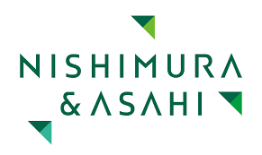

Strategy. Culture. Leadership.
When the stakes get higher,
how you work together
matters more.
Ascentric works with leaders when growth, change, or complexity make the work harder than it should be.
We help leaders see the pattern beneath the problem, make the hard choices, and change how the organization actually works together.

Founder-led. Field-tested.
Different settings.
The same human questions.
I’ve spent more than two decades working with groups in classrooms, on rivers, across mountains, in remote communities, inside founder teams, and through difficult organizational change.
The settings have been wildly different. The pattern hasn’t.
When work becomes harder than it should be, intelligence is rarely the missing ingredient. More often, it’s trust, communication, power, conflict, clarity, or the unwritten rules shaping how people work together.
That’s the work behind Ascentric.
- Founder & operator
- Berkeley-trained executive coach
- EQ-i 2.0 certified
- Faculty Fellow, Berkeley Institute for Human Connection
Recognize any of this?
When work gets harder than it should be, look at how you’re working together.
- Decisions keep getting revisited.
- Roles and authority become blurry.
- People stop saying what they really think.
- Too many decisions land with the same few people.
- The strategy changes. Behavior doesn’t.
- Strong people start working around one another.
What worked at one stage stops working at the next.
Adam has coached and facilitated leaders from organizations including



In their words
Clearer thinking.
A different way forward.
Experiences from individual leadership work.
Adam has been a thoughtful guide and confidante as I worked through a significant career and life transition. He helped me separate signal from noise and find a path forward that is both authentically mine and worth walking. His style is heart-forward and grounding, but he also pushes. He surfaces the confidence questions and emotional blockages most leaders learn to route around, and he balances that reflective work with a clear sense of what to actually do next. I leave our sessions with more energy and direction than I came in with.
I was at a crossroads. Working with Adam, the session helped me think like a CEO and be a CEO. He's very good at taking the theory and saying, okay, let's put it in action right away. It's not superficial work at all. If you're going through change, I think that Adam's the person to work with.
Adam guided me through an illuminating process, from not knowing where to go next to gaining clarity that led me toward pursuing an MBA and making important shifts in my career path. Working together always felt light and inspiring, while also being grounded in clear, actionable next steps. I'm deeply grateful for the support, empathy, and presence Adam brought throughout the process.
The work
Three ways into the work.
Strategy & Organization
Turn strategic choices into an organization that can execute them.
Strategic planning · Organizational design · Decision rightsCulture & Teams
Understand what’s happening between people. Build the trust, clarity, and agreements to work differently.
Culture Cartography™ · Leadership teams · Founder / cofounder workExecutive Leadership
Work on the real decisions, relationships, and conversations that come with leading.
Executive coaching · Founder / CEO development · EQ-i 2.0The approach
Strategy points to where you’re going. Culture determines whether people can get there together.
- Growth
- New technology
- New strategy
- Leadership transition
- Greater interdependence & consequence
- Roles
- Trust
- Decisions
- Communication
- Norms
- Leadership practices
-
01
Map
Find the pattern beneath the problem.
-
02
Align
Choose what has to change.
-
03
Practice
Make the new way of working real.
Culture is created by what people repeatedly do together.
Explore the approachWhat an engagement looks like
A place to start.
Room to go deeper.
A free fit call helps us choose the right shape of work. You don’t have to move through these in order.
Focused session
One bounded issue. Approximately 90 minutes.
Diagnostic or sprint
Understand the pattern and move a consequential organizational issue.
Ongoing partnership
For culture, team, strategy, and leadership changes that take sustained work.
Executive coaching typically begins with a three-month engagement. See how coaching works
Why Ascentric exists
Ascentric exists to help people work together with more trust, coherence, and shared momentum.
The culture is already being built. The question is whether you’re building it on purpose.
Bring that conversation into the room. I speak and facilitate for leadership teams, conferences, and communities ready to look more closely at how they work together.
Speaking, workshops & facilitated sessionsLet’s talk
What is your organization navigating?
Tell me what’s happening and what you’d like to change. We’ll start there.